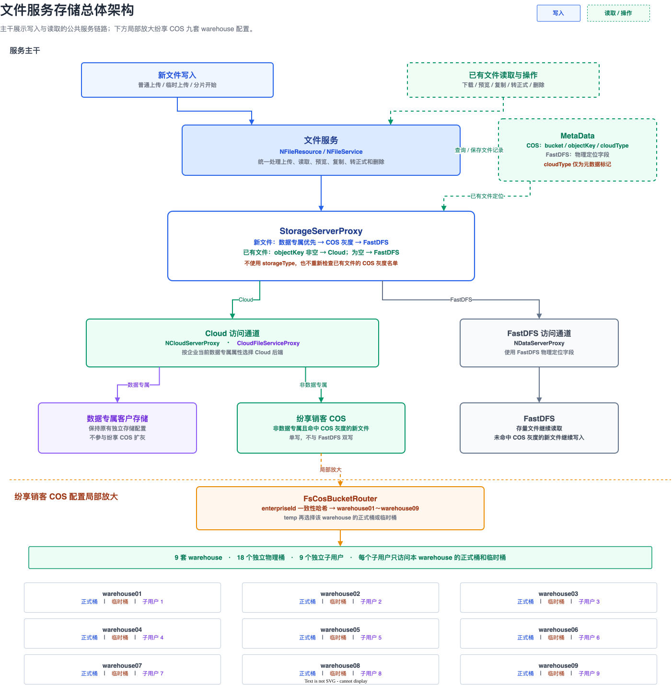
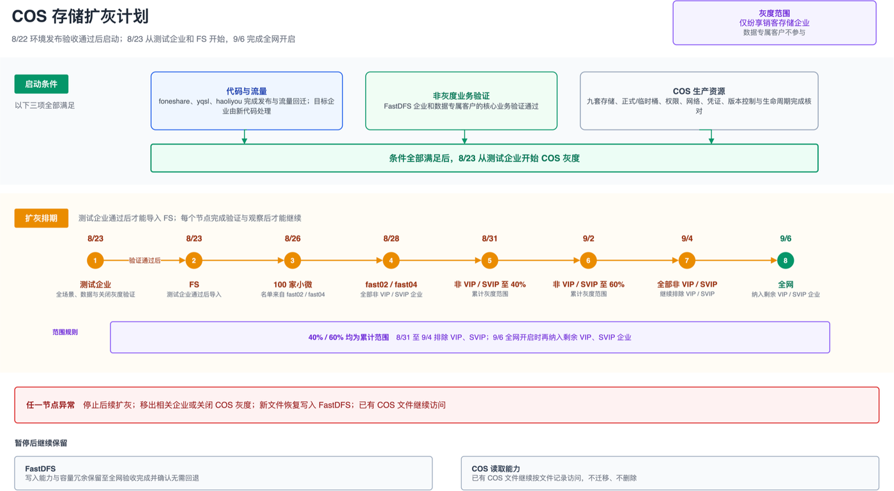
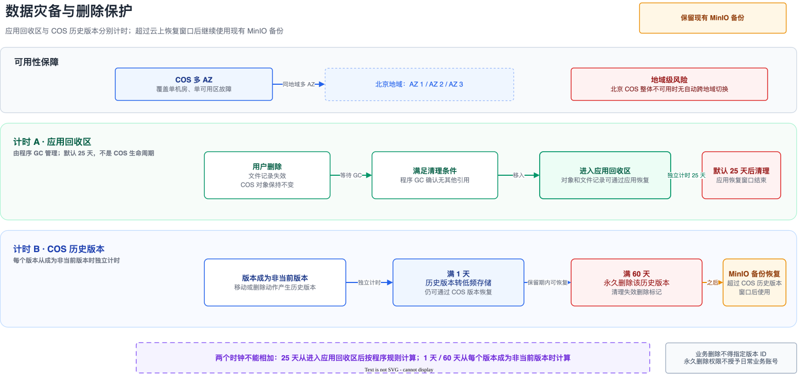

Principles
目标与原则
单写
新文件只写一个目标。双写要缓存、复制、两套失败处理，部分成功会不一致。
不迁存量
FastDFS 文件留在原地。退出灰度后新文件回 FastDFS，已有 COS 文件不回写、不删。
专属优先
同时命中数据专属和 COS 名单时，走数据专属，不进纷享销客 COS。
| 对比 | 变更前 | 变更后 |
|---|---|---|
| 纷享销客存储 | 新文件写 FastDFS | 按企业选择 FastDFS 或 COS |
| 数据专属 | 客户独立存储 | 保持原方式 |
| 存量文件 | 从原存储读 | 继续从原存储读 |
| 读取 | 按原记录 | objectKey 非空进 Cloud，否则 FastDFS |
业务接口不变：上传、下载、预览、临时转正式、分片、删除对业务侧无感知。读取、复制、转正式、删除靠文件记录里的 objectKey 区分通道，不看当前 COS 名单，也不读 storageType。
Routing
存储架构

写入与读取路由 Draw.io
写入顺序
StorageServerProxy.isCloudStorage(ea) 选唯一目标：
- 数据专属客户 → 数据专属存储。
- 纷享销客企业命中 COS 名单 → COS。
- 其余纷享销客企业 → FastDFS。
COS 记录保存 bucket、objectKey、cloudType。FastDFS 记录保存 trackerGroup、group、masterId、storageAddress。进入 Cloud 后，CloudFileServiceProxy 再按当前数据专属属性选择专属存储或纷享销客 COS。cloudType 只做元数据标记。
九套分区
FsCosBucketRouter 按 enterpriseId 在 warehouse01–warehouse09 做一致性哈希，再按生命周期选正式桶或临时桶。每套两个物理桶、独立子用户，权限只覆盖本套两个桶。先定哪一套，再定正式/临时。tempFile 表示业务生命周期，不用于选套。
Business Path
核心业务链路
| 操作 | 改造后 | 感知 |
|---|---|---|
| 普通上传 | 先定存储体系，再选唯一写入目标 | 无 |
| 下载 / 预览 | objectKey 非空进 Cloud | 无 |
| 临时转正式 | 继承源文件通道，不按当时名单改体系 | 无 |
| 分片上传 | 开始时定目标，后续动作保持一致 | 无 |
| 删除 / 恢复 | 先逻辑删除和应用回收，再靠 COS 版本控制延时保护 | 无 |
纷享销客 COS 转正式：同一套配置内从临时桶复制到正式桶。FastDFS：满足条件则复用原物理文件，否则读临时文件再保存。需要图片处理的，新文件仍写原图所在体系。
分片进行中改名单，已开始的文件仍在原目标完成。临时桶必须配置未完成分片过期清理。多记录引用同一对象时，有其他引用就不处理物理对象。
| 场景 | 读取 |
|---|---|
| 存量 FastDFS | 继续 FastDFS |
| 新增 COS | 按记录进 COS |
| 数据专属 | 按客户原配置 |
| 退出灰度 | 新文件写 FastDFS，已有 COS 继续从 COS 读 |
Preconditions
资源与上线准备
启动条件：代码发布已验收；foneshare、yqsl、haoliyou 已发布并回迁流量；FastDFS 与数据专属核心业务通过；后续真实企业都由支持 COS 读写的新代码处理。COS 名单和代码流量名单分开管。
测试企业开启前
- 九套配置、正式桶、临时桶全部创建完成。
- 地域、多 AZ、网络、代理、访问地址、warehouse 路由正确。
- 九个独立子用户，每个只能访问本分区两个桶。
- 正式桶和临时桶开启版本控制；非当前版本 1 天转低频、60 天删除。
- 临时桶配置未完成分片过期清理。
评审基线记录资源已准备，生产子用户权限仍需完成。现场以发布单核对结果为准。任一准入字段未填、上一节点未到观察时长、业务失败或超阈值，不得进入下一节点。
Rollout
COS 扩灰

8 月 23 日 — 9 月 6 日 Draw.io
代码发布验收完成前，不开 COS 写入。
先测试企业，通过后再加 FS。上传、读取、预览、转正式、分片、删除和关闭灰度都要过。
从 fast02、fast04 选 100 家在用小微。
这两个分区全部非 VIP、非 SVIP。VIP / SVIP 不得进名单。
累计扩大至全部非 VIP。百分比是企业名单累计范围，不是单企业随机比例，也不是在上一节点上再加一层。
纳入剩余 VIP、SVIP，全网开启。数据专属始终不计入。
单批操作
- 按当天节点生成名单，排除数据专属。
- 确认请求由新代码处理，核对分区、VIP 标签、名单和九套 warehouse。
- 按发布排期把
stone-cloud-write-v2整行替换后发布。 - 验新文件写入预期桶；验读取、预览、转正式、分片、删除；验存量 FastDFS 仍可读。
- 把单个测试企业移出后，新文件回 FastDFS，已有 COS 仍可访问。记录指标并达到观察时长。
Verification
验证方案
| 场景 | 预期 |
|---|---|
| 非灰度纷享销客上传 | 继续 FastDFS |
| COS 灰度企业上传 | 写入预期配置和桶 |
| 数据专属上传 | 走专属存储 |
| 同时命中专属和 COS | 专属优先 |
| 退出灰度 | 新文件 FastDFS，已有 COS 继续可读 |
| 分片中改名单 | 已开始的上传在原目标完成 |
| 逻辑删除 | 业务不可见，COS 对象不立即永久删除 |
| 多记录引用 | 有其他引用时不处理物理对象 |
每个场景同时确认：操作成功，内容/大小/校验正确；记录能定位实际存储；九套桶选择符合预期；没有误删共享对象；日志能定位存储和失败原因；指标满足发布单。
评审基线：ceshi112 人工测试通过；2026-07-20 自动化 645 用例、报告 99.16%。只说明已有范围，不替代生产端到端和恢复演练。

自动化核心场景 · 2026-07-20
全网完成：9 月 6 日全部纷享销客存储企业开启 COS 写入，业务与指标通过；FastDFS 回滚写入能力和容量保留到全网验收完成并确认无需回退。
Stop / Rollback
暂停与回退
不建设 COS 到 FastDFS 的数据回迁。暂停只改后续新文件写入目标。
| 级别 | 场景 | 操作 |
|---|---|---|
| 企业级 | 个别企业异常 | 移出名单，新文件回 FastDFS |
| 一级 | 指标波动、功能可用 | 停止增加企业和比例 |
| 二级 | 写入、读取或性能系统性异常 | 关闭 COS 规则，保留读取 |
已产生 COS 文件后：关闭灰度、保留读取/复制/删除/转正式、验证已有对象可访问、保持混合存储。不能回退到不支持 COS 读取的旧版本。每批真实企业前，测试企业必须做一次单企业暂停演练。
触发：核心操作持续失败；实际写入位置与名单或哈希不一致；Tomcat 或资源持续超阈值；桶权限、版本控制、生命周期或子用户隔离不符合预期。
Durability
数据保护与恢复
COS 多 AZ。长期保护继续用现有 MinIO 备份。本期不做跨地域自动切换；北京 COS 整体不可用时等待腾讯云恢复。数据专属走客户自己的灾备。

删除保护 Draw.io
- 用户删除先逻辑删除，不立即永久删除 COS 对象。
- 程序 GC 在无其他引用且满足条件后移入应用回收区，默认 25 天后清理。
- 版本控制下，移动和删除产生删除标记并保留历史版本。
- 每个非当前版本独立计时：1 天转低频，60 天永久删除，并清理失效删除标记。
- 超过 COS 保留期后，按 MinIO 备份恢复。
25 天是程序 GC 默认清理时间，不是 COS 生命周期。60 天从成为非当前版本起算。恢复顺序：应用回收区 → COS 历史版本 → MinIO。业务删除不得指定版本 ID。未删除的当前版本不归档。临时桶必须配未完成分片清理，是否纳入 60 天恢复要单独确认。
Risk & Follow-up
风险与待办
| 风险 | 应对 |
|---|---|
| 文件操作异常 | 小范围验证；异常暂停灰度 |
| 性能波动 | 每批留观察时间；超阈值停止扩大 |
| 混合读取错误 | 按文件记录选通道；每批验存量与新增 |
| warehouse 路由错误 | 灰度前核对哈希、配置和实际写入位置 |
| 权限过大 | 九个子用户独立策略 |
| 生命周期配错 | 正式/临时桶逐一核对，完成恢复演练 |
| 版本无法完全回退 | 保留支持 COS 读取的版本，只停新增写入 |
| 北京 COS 整体不可用 | 无自动跨地域；MinIO 备份 |
后续事项
| 事项 | 负责人 | 时间 |
|---|---|---|
| 测试企业 COS 灰度与核心场景 | 刘云松、安宜龙 | 8 月 23 日 |
| 后续名单和节点门禁 | 刘云松、黎贵昂 | 每个节点开始前 |
| FastDFS 回滚写入能力和容量 | 黎贵昂 | 全网验收完成前 |
| 生产 COS 子用户与权限 | 刘云松 | 测试企业灰度前 |
| 三类恢复演练 | 刘云松 | 真实企业扩灰前 |
| ABU 客户灰度通知 | 刘云松 | 最终阶段前一周 |
| 上云成本跟踪 | 程波 | 扩灰期间按账单复核 |
| 停用企业与过期数据治理 | 刘云松 | 后续成本治理 |
子用户创建参考 腾讯云 COS 子用户创建指南。评审估算约为原成本三倍。